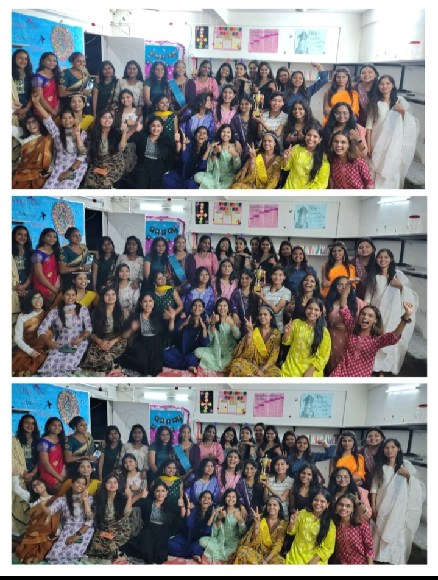
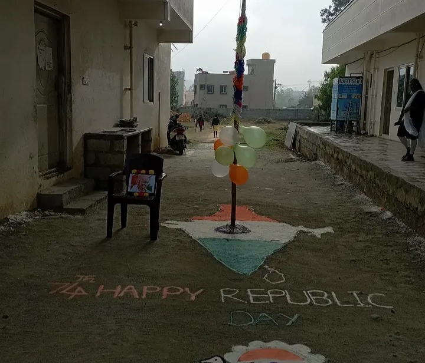
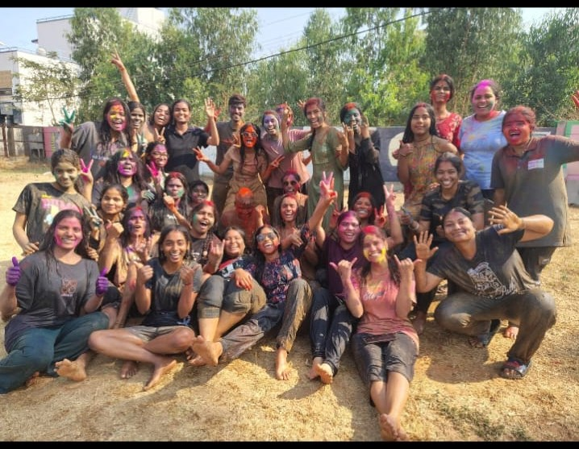
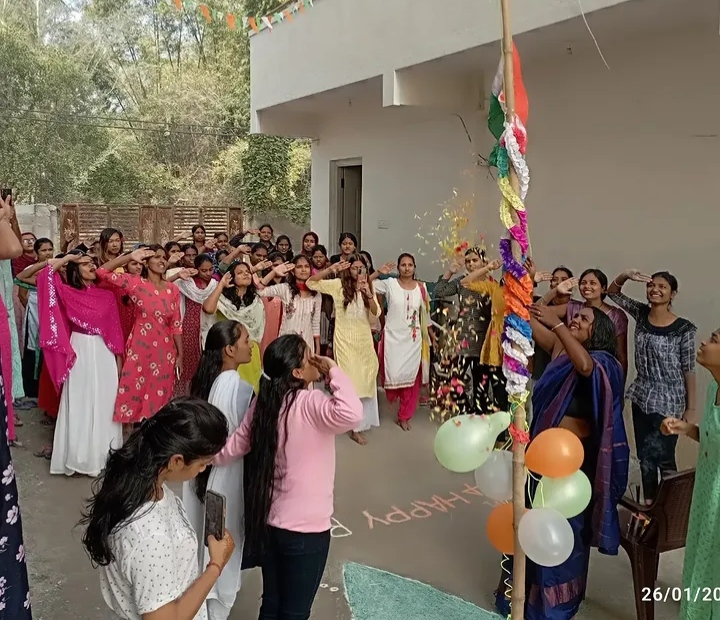
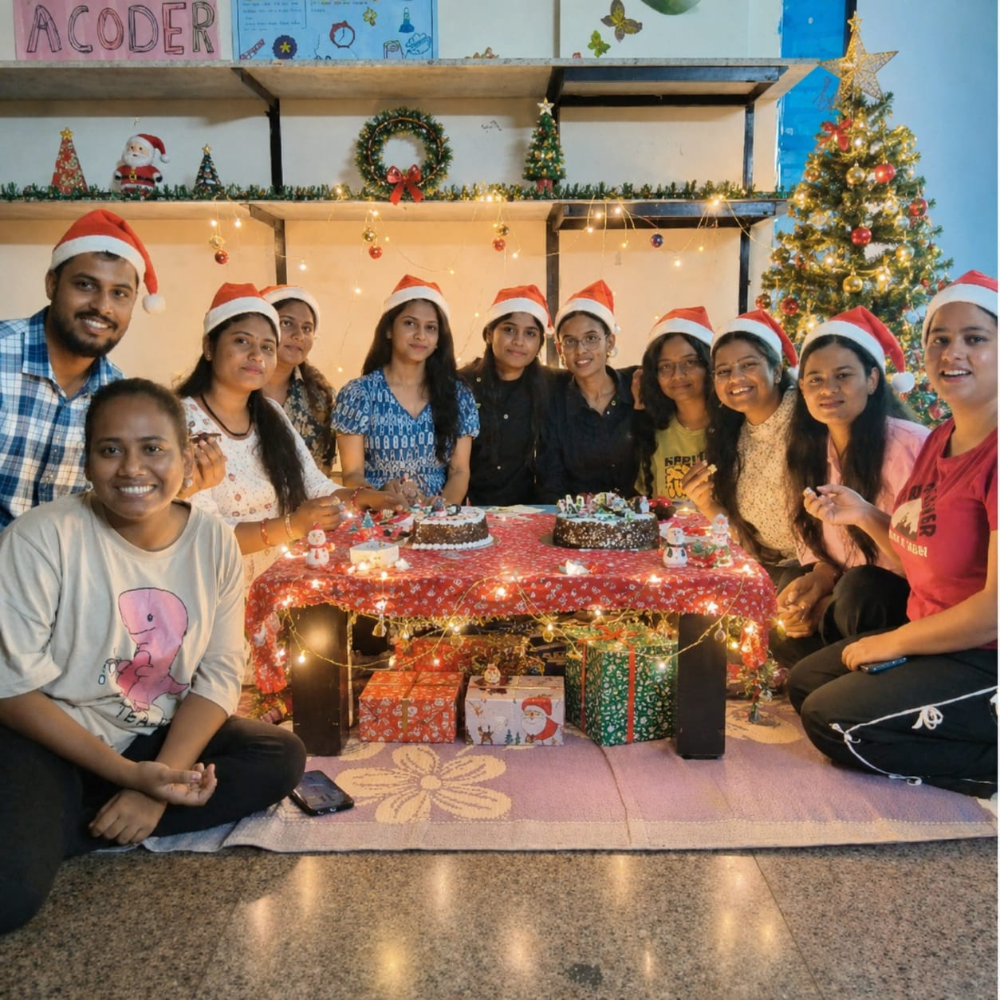
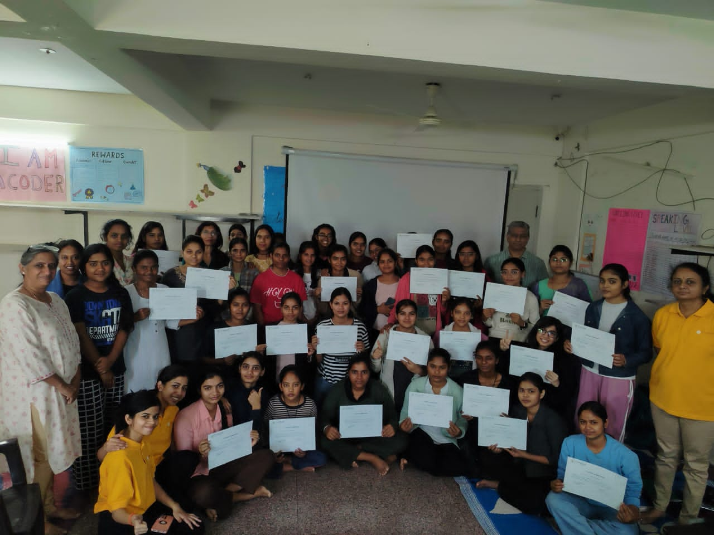
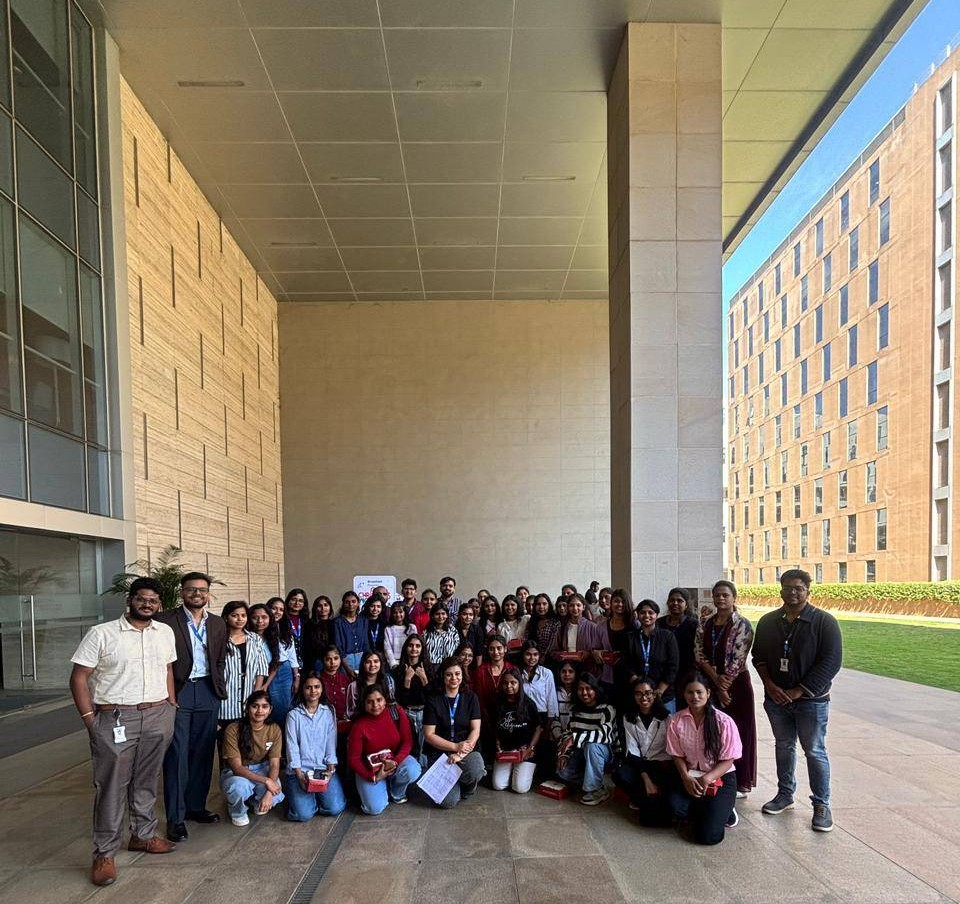
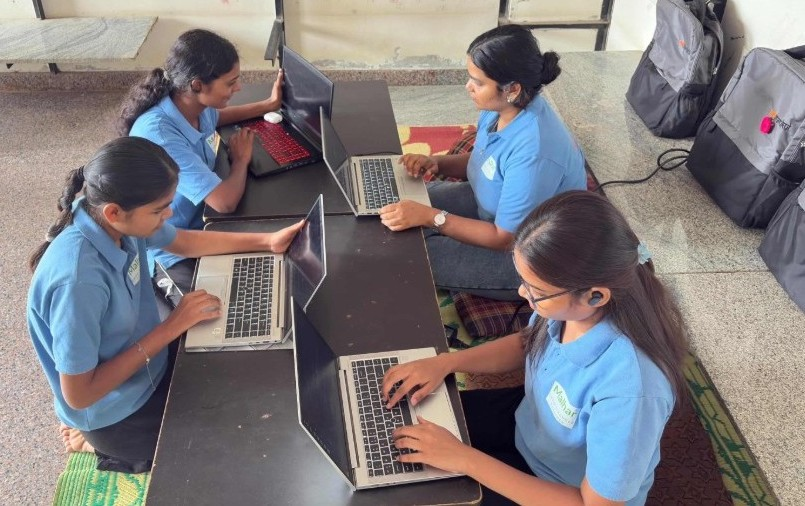
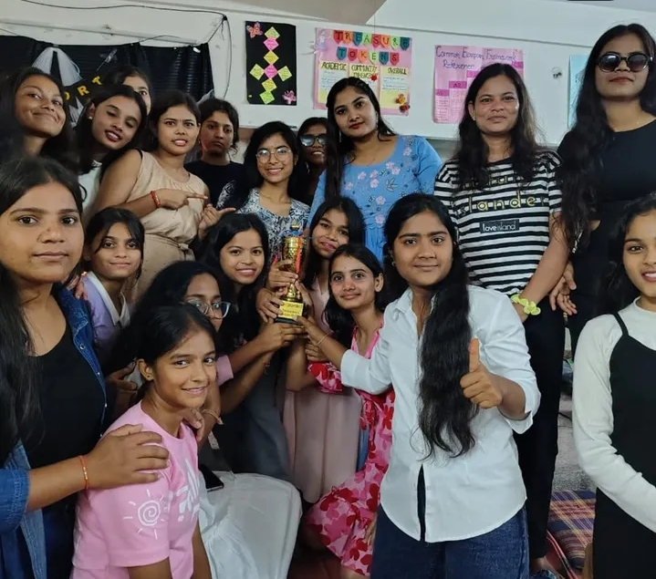

Celebrations at NavGurukul bring students together through games, rewards, festivals, teamwork, and joyful memories.

At the end of every month, students are rewarded for their hard work, discipline, teamwork, and learning achievements. Celebration days begin with fun morning games and team activities.

Republic Day celebrations include patriotic activities, speeches, and inspiring programs that teach students the values of the nation.

Students celebrate Holi with colors, music, fun games, and happiness while enjoying beautiful moments together on campus.

Independence Day is celebrated with flag hoisting, patriotic songs, speeches, and cultural programs that show unity and love for the country.

Christmas is celebrated with decorations, music, dance, games, and joyful activities that create wonderful memories for students.

At NavGurukul, placement celebrations are very special moments for students. Friends and mentors gather together to celebrate the success of placed students with music, games, speeches, dancing, cake cutting, and memorable farewell activities.

Workshops at NavGurukul are designed to help students learn new skills through hands-on practice and real-world exposure. Students not only work on coding projects but also participate in industry visits and educational trips. These visits help them understand how companies work, improve practical knowledge, and connect classroom learning with real-life applications. Mentors guide students throughout these sessions to build confidence and technical skills.

Hackathons at NavGurukul are intensive learning events that usually run for 12 hours or 24 hours. During these hackathons, students work individually or in teams to build real projects, improve their coding skills, and enhance their profiles. Participants focus on problem-solving, creativity, and fast execution. It is similar to a real-world development environment where students design, code, and refine their projects within a limited time, helping them gain practical experience and confidence.

Community events at NavGurukul are organized to bring all students together and build a strong sense of teamwork and belonging. These events include group activities, cultural programs, celebrations, discussions, and interactive sessions. Students get a chance to share their experiences, learn from each other, and enjoy moments outside regular academics. Community events help in improving communication, confidence, and collaboration among students while creating a positive and supportive campus environment.

At NavGurukul, competitions are held between three houses where students participate in different activities and challenges. Each house works together as a team to perform their best, show coordination, and earn points through various tasks and events. At the end of the competition, the house with the highest performance is declared the winner. On the effort day, the winning house is appreciated and awarded as a recognition of their teamwork, discipline, and consistent effort throughout the competition.